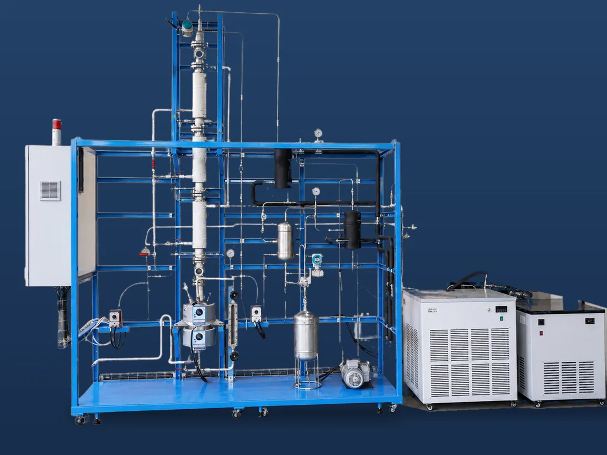

Process validation
Evaluate process behaviour under defined operating conditions.
From laboratory development to engineered process validation
Instron Technologies engineers integrated pilot and demonstration systems for research organizations, technology developers and industrial R&D teams, combining process systems, instrumentation, automation and data collection for controlled trials, technology evaluation and informed scale-up decisions.

From science to operable equipment
A pilot system is engineered around what the test program needs to show.
Evaluate process behaviour under defined operating conditions.
Accommodate planned changes in operating parameters, sequences and test conditions.
Collect the process information needed to evaluate system performance.
Record experimental observations, process trends and operating results.
Use findings from pilot trials to inform the next engineering and demonstration stage.
Pilot systems for oil and gas refinery research centres: gas purification, amine CO₂ capture and membrane hydrogen separation up to 50 barg, and a milli-channel reactor setup.
Read the case study
Scale-up readiness
For technologies that need to operate beyond bench scale under more representative process, utility, control or site conditions before a larger investment or transfer decision. A demonstration system tests:
Process behaviour across longer or repeated operating campaigns.
Interaction between process equipment, controls, utilities and supporting systems.
Startup, shutdown, monitoring, maintenance and operating procedures.
Technical information needed to evaluate the next stage of scale-up or implementation.
Does pilot testing guarantee scale-up?
No. A pilot can improve the engineering basis by generating operating evidence and exposing scale-dependent behaviour. Scale-up still requires engineering judgement and project-specific analysis.
One connected engineering basis
Each layer is engineered for the test program, not for a fixed production duty.
Develop the experimental process configuration, equipment duties, operating limits and system interfaces.
Select and integrate the measurements needed for experimental evaluation, process control and operating data.
Configure operating sequences, control loops, setpoints, alarms and operator interfaces for the test program.
Capture selected experimental parameters, operating trends and reports for technical evaluation.
Decision-useful deliverables
The engineering package is shaped around the test program and may include:
Acceptance and commissioning
Factory acceptance testing is most useful when it is tied to the agreed operating and control basis rather than treated as a generic inspection.
Site acceptance and commissioning then address the interfaces that cannot be proven fully before installation: utilities, tie-ins, site equipment, real process behaviour, tuning, operator interaction and final handover requirements.
Further reading
Selected work
Client names are withheld. References are available on request.
Share your technology application, current development stage, experimental objectives and available process information, and our team will discuss the engineering requirements and scope for your pilot or demonstration system.


